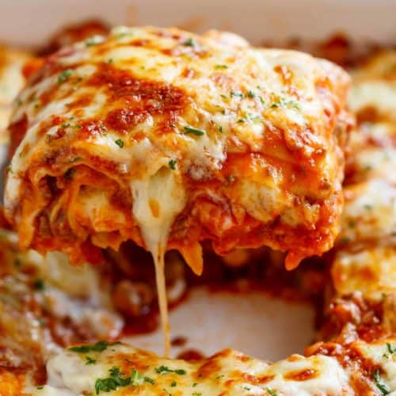

LemmikRetsept
I ♥ Lasagna
Nimekiri
Mulle meeldib lasajne juures see et see on väga juustune ja see teebki selle väga heaks.
2 hakkitud sibulat,
1 kimp hakitud peterselli,
400-500 g hakkliha,
2 riivitud porgandit,
400 g purustatud tomatit,
2 dl vett,
soola ja musta pipart,
1 tl punet,
Juustus kaste,
50 g võid,
60 g nisujagu (1dl),
1 l piima,
100 g riivitud juustu (2dl),
veel soola ja musta pipart
Lasanje Retsept